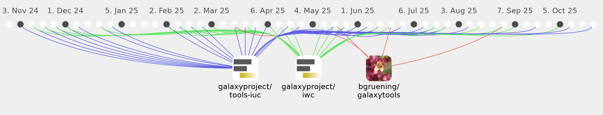

planemo-autoupdate

Commits all-time: 639
Commits last year: 179

(123)
- 783e8a8
- 85811af
- 1148104
- 70ae748
- 597b171
- 010433b
- 452aa3d
- b9eae53
- 04cdc02
- 27e529b
- c1b9f8c
- 6d87621
- c7a091a
- 7ecd1e5
- 219997b
- d04dde6
- dddf1f2
- 29248b3
- 79505f7
- 013e15e
- 2c9a2d8
- 5a54a62
- e917807
- 1c8de2f
- 4c5c6fe
- 63f8a01
- cc2c8ea
- 0e151e5
- 084ab83
- 5011f4a
- e110211
- f42e456
- f57dc7c
- e74e557
- d66393b
- 9cf9962
- ffe46d1
- 0dfe1bb
- bd74e22
- 8e9c021
- 38e2200
- 184ac3e
- 8eb0a81
- 2b320e3
- 342d5ee
- d344668
- 185f793
- f692ac2
- b70fd5c
- b6df39a
- c2a32f9
- ce0f40d
- 2c6c9fe
- 483ba3c
- 55588cb
- 6bfe19b
- 8633f21
- c130c5e
- 7397c42
- b1629d5
- f65f32e
- 1530d6a
- 175432e
- 50ba873
- d4fb1a5
- 6f881fb
- 5119f9c
- e43cc82
- 4b9b8c9
- 97288e6
- 83ce934
- 1f62801
- fc61392
- ca8691e
- 297befa
- 21ff69f
- c5995c3
- 8da5194
- 175f63c
- 96fc9b9
- 9644f3e
- 3a442da
- 68c0d18
- be8655b
- fd61500
- 4c0be4c
- 718eb84
- 8a7d469
- 425ff20
- c6abb52
- 77a7f2c
- 3df9ea7
- deb167e
- 05cf1af
- 7b995f4
- 06c9e12
- aa35079
- ce14bc0
- ed71a60
- 25a993f
- 77d2568
- dd23119
- b10c367
- 06d9345
- c9e67ec
- fe8ebf1
- 0b2088b
- fafbde9
- 7a0aff8
- 16c039f
- f55e5d7
- 909f5bd
- e0e3a33
- 53cbafb
- 0068852
- 6d6bb0d
- a21c373
- 13f5abb
- 00562f2
- ca76203
- 8ef73af
- 2a8458b
- 796ee51
(51)
- 8aeea4d
- 300d90e
- 6e2a9e2
- 4e83d01
- dcbf243
- 6729335
- b74ba3c
- 344e91c
- a45b071
- fb1d985
- 1a3f1e5
- ad5ea9f
- 2135093
- 4bb54da
- 298eaed
- 3406cb7
- 92afd3b
- 1c12f5f
- 463de40
- f6366c8
- 24dd237
- 5a31fa8
- 437a1b0
- dc9dee7
- c6d4042
- 67e8e89
- dba52a8
- 4bcda0b
- 2c1f720
- ac8c5df
- dec5a86
- 8b451f8
- 9bc2df3
- 323d051
- 2da0ce5
- 4dd5eae
- e56ebfd
- 5be3089
- 3b84de0
- 9e4d818
- 906795d
- baa6582
- 80dce52
- 62f0bce
- fb6754c
- 42c9b53
- 4e3df28
- fbfe6c6
- 6b3d8a4
- 030ae6e
- a989dab
(5)